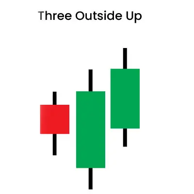
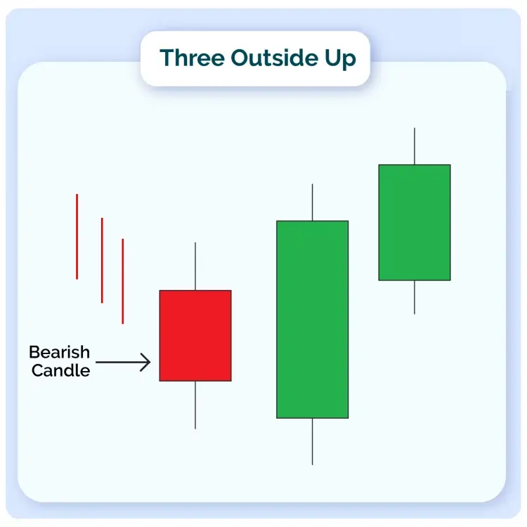
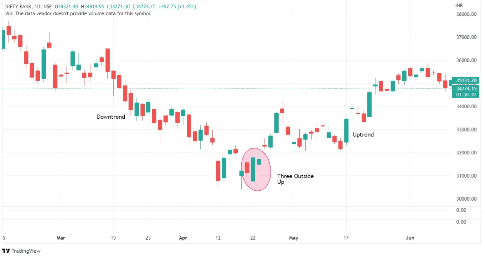

Three successive candlesticks form the three outside up pattern, which usually appears after a bearish trend. The movement of these candles always indicates whether or not a trend reversal is imminent.
A single bearish candle is followed by two bullish candles to form the pattern. For counter-trend trading tactics to work, accurate detection of this pattern is critical.
| Formation |
Let us discuss how this candlestick pattern is formed-

1. The market must decline for a three outside up pattern to appear.
2. The pattern’s first candle will be black, signifying a downward trend.
3. A large white candle will be formed next. It will be long enough for the first black candle to be completely contained within its true body.
4. The third and final candle, which indicates three outside up, must also be white. This candle, however, should close higher than the second candle. This shows that the downward trend is changing direction.
| What Traders Interpret from a Three Outside Up Pattern |
With the closure lower than the open, the first candle maintains the bearish trend, showing significant selling interest and building bear confidence.
The second candle begins lower but quickly reverses, crossing through the first tick in a bullish showing. This price action raises a red flag for bears, signalling that those gains should be taken or stopped because a reversal is possible.
The stock continues to rise, with the price now above the first candle’s range, completing a bullish outside day candlestick. This boosts bullish sentiment and triggers buy signals, verified when the security makes a new high on the third candle.
| Trading Example |
One of the important characteristics of this technical indicator is that the size of the engulfing candlestick, which is the second of three, determines its power. The three outside up patterns is more prominent the larger the second candle.
The smaller the negative downtrend becomes, the weaker its indication becomes. As the price movement increases with the second candle, bullish sentiments appear to be outnumbering bearish sentiments.